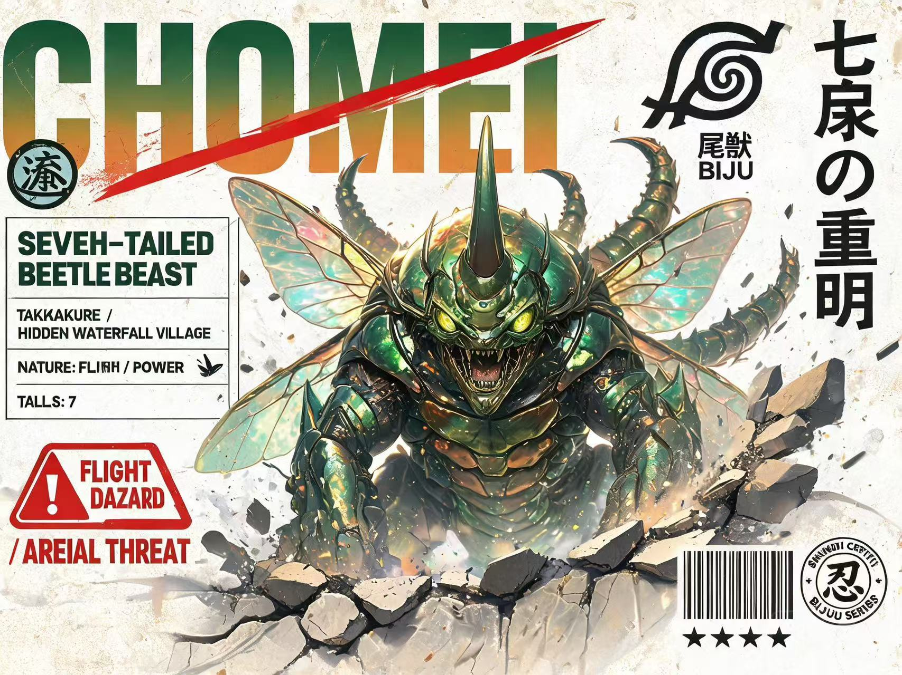

CHOMEI
CHOMEI
七尾の重明 · Seven-Tails · Flight 飛翔
SUBJECT DOSSIER · 対象記録
- DesignationSeven-Tailed Beetle Beast
- 七尾重明 · CHOMEI
- VillageTakigakure / Hidden Waterfall
- 滝隠れ滝里
- NatureFlight 飛翔
- TailsSEVEN (7)
- Power飛翔鳞粉 / Wing-Scale Powder
- JinchūrikiFū フウ
VILLAGE SEAL · 里印
滝
TAKIGAKURE · WATERFALL SEAL
AUTH. № TW-07-CHO
尾獣 · BIJU
七尾の重明
BIJU No.07
飛翔 MASTER · AERIAL ARTS
FLIGHT HAZARD — AERIAL THREAT
飛翔鳞粉危険区域 · DO NOT APPROACH
飛翔鳞粉危険区域 · DO NOT APPROACH
★★★★★★★
THREAT CLASS: S-RANK · 認証 № BJ-07